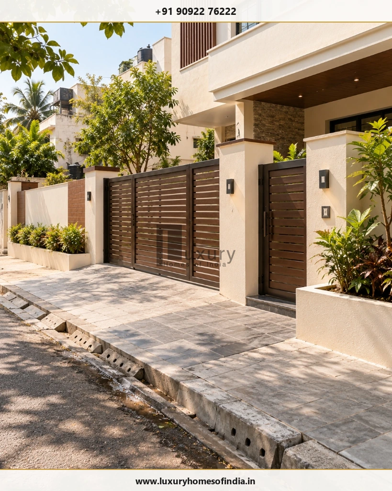

Why can the final cost of building a house exceed the original quotation?
The final cost of building a house can exceed the contractor’s quotation when the quoted scope does not include every expense needed to complete the home. Potential additional costs include architectural and structural fees, approvals, site preparation, foundation-related work, water storage, utility connections, compound walls, waterproofing, exterior finishes and interior fit-outs. Some items may already be included in the construction package, while others are charged separately or depend on actual site conditions. Before signing an agreement, homeowners should compare the quotation against a complete project budget, confirm material and workmanship specifications, identify exclusions and agree on a written process for pricing changes. A contingency reserve can help manage genuine uncertainty, but it should not replace estimates for known expenses. For a Chennai home, the most useful first step is to create an itemised scope covering the building, external works, services, interiors and applicable professional or statutory charges.

A completed contemporary two-storey residence in Chennai featuring integrated architectural massing, boundary wall, entrance gate, driveway paving, and exterior lighting.
A construction quotation can look straightforward when presented as a rate per square foot. The difficulty is that the quoted amount may cover only the main building or a defined package of civil, electrical and plumbing work.
The remaining expenses can emerge from site conditions, design choices, external development, utility arrangements or decisions made during construction.
The solution is not to assume that every builder excludes the same items. It is to establish precisely what your quotation covers and what your finished home will require.
This guide explains 12 potential additional cost categories, the questions to ask before committing to a contractor and a practical way to reconcile the quotation with your overall budget.
1. Building Plan Approval and Professional Fees
Residential construction may require architectural drawings, structural design, surveys, supporting documents, planning permission and building permits, depending on the property and applicable regulations.
The relevant process depends on the site location, building category and authority responsible for the application. Greater Chennai Corporation (GCC) publishes building-permit guidance, and Tamil Nadu provides an online Single Window Portal for Planning Permission.
Check the current procedure with the relevant authority before making financial or scheduling assumptions.
Professional architectural review of coordinated floor plans, structural layouts, triangular scale rules, and physical villa scale models.
Potential Expenses Include:
- Architectural design and drawing preparation
- Structural engineering and calculations
- Site surveys and supporting documentation
- Applicable planning-permission and building-permit charges
- Additional technical services or certificates where required
- Drawing revisions or additional professional work
These items may be included in a construction package, charged separately or handled directly by the homeowner.
2. Soil Investigation and Foundation-Related Work
The ground beneath a property affects the foundation design. A contractor's preliminary estimate may rely on assumptions about the site that need to be confirmed through investigation and engineering assessment.
Depending on the actual conditions, additional work may involve:
- Soil investigation and geotechnical borehole testing
- Excavation and removal of unsuitable clay, debris or organic material
- Engineered filling and vibratory compaction
- Groundwater management or continuous site dewatering
- Changes to the foundation design (e.g., shifting from isolated footings to raft or under-reamed piles)
- Additional structural materials (extra steel tonnage and high-strength concrete) or specialised labour
Not every plot requires extensive ground treatment, and no single foundation solution is appropriate for every property.
3. Site Clearing, Levelling and Earthwork
A plot may need preparation before construction can proceed. Existing structures, rubble, vegetation, uneven levels or unsuitable fill can increase the work required.
Possible Expenses Include:
- Removal of existing structures or old foundations, where applicable
- Clearing and off-site disposal of trees, roots, and construction debris
- Deep excavation and bulk earthwork
- Red gravel / quarry dust filling and mechanical roller compaction
- Levelling around the building footprint to achieve safe finished floor levels
- Temporary site access ramps and heavy material handling arrangements
- Transport and municipal disposal permits for excavated soil
The extent of the work depends on existing site levels versus road levels, site access constraints, quantities and the proposed finished floor height (plinth level).
4. Underground Water Sump, Overhead Tank and Pumping Equipment
Water storage is essential to meet a Chennai household's daily requirements, but the cost depends on the chosen capacity, structural method and the scope of the construction package.
Potential Expenses Include:
- Underground sump construction (brick masonry vs. monolithic reinforced concrete)
- Sump internal waterproof plastering, food-grade epoxy coating, and cast iron / FRP access covers
- Overhead tank (sintex / composite vs. RCC masonry) and supporting structural head-room arrangements
- Submersible pressure pumps, automatic water-level controllers, and associated electrical connections
- Dual-line pipework between municipal water, borewell, underground sump, and overhead storage points
- Hydrostatic pressure testing and plumbing commissioning
Capacity, dimensions, construction method, equipment and installation requirements all affect the final scope.
5. Water Supply and Wastewater Connections
The available water supply and approved wastewater arrangements depend on the property and its municipal location.
Potential costs may include sinking a deep borewell (drilling charges, casing pipes, submersible pump, cables), applicable municipal (CMWSSB) metro water connections, sewerage network connections, permitted on-site wastewater arrangements (septic tank, soak pit, or mini-STP) and associated civil or external trenching work.
Not every home requires every option. The actual requirement should be established before the project budget is finalised.
6. Compound Wall, Main Gate and Boundary Work
Boundary work can be a substantial part of external development, particularly when the plot has a long perimeter, challenging terrain, or the entrance includes customised architectural features.

Exterior perimeter development showing solid plastered boundary wall, motorized steel-timber entrance gate, security lighting, and roadside storm drainage.
Potential Expenses Include:
- Boundary-wall foundations, plinth beams, and masonry construction
- Structural RCC stiffener columns and coping
- Internal and external plastering and weather-shield painting
- Main sliding/swing gates and smaller wicket access gates
- Gate hardware, motorized automation, and video door phone integration
- Boundary-related peripheral storm-water drainage channels and finishing
The price depends on linear perimeter length, height, structural wind-load requirements, finish quality, and gate fabrication specifications.
7. Electrical Connections and Additional Electrical Provisions
A standard electrical package may include basic wiring and specified points without covering every connection charge, upgraded circuit or specialist installation.
Depending on the design, potential expenses include:
- Applicable TANGEDCO utility connection charges, meter deposits, and line extension fees
- Three-phase meter panel board or service-related main distribution infrastructure
- Additional electrical circuits, dedicated heavy-appliance points, and USB wall sockets
- Higher-capacity electrical provisions (sanctioned load upgrades for EV charging or ducted AC)
- Copper plate earthing, lightning arresters, and sensitive residual current protection (RCCBs)
- Concealed copper piping and dedicated drain lines for split air-conditioning
- Inverter, backup generator changeover switch, or rooftop solar net-metering provisions
- Decorative lighting, cove LED strips, and specialist exterior architectural fixtures
The actual requirements depend on the electrical design, intended appliances, sanctioned load and selected equipment.
8. Waterproofing and Moisture Protection
Waterproofing should be defined as a specific scope of work rather than a vague line in the quotation.
Relevant areas include bathrooms, balconies, utility yards, terraces, flat roof slabs, sunken floor areas and water-retaining structures, depending on the building design.
Professional elastomeric waterproofing membrane application on a terrace slab, illustrating 300mm parapet wall upstands and recessed rainwater dome drains.
Potential additional expenses can arise when areas, materials, preparation work or testing requirements have not been clearly specified.
Before Signing, Confirm:
- Which surfaces and wet areas are explicitly covered
- The specified waterproofing system (elastomeric acrylic, polyurethane, or APP bitumen membranes)
- Surface preparation, fillet joints, coving, and multi-coat application requirements
- Required pond testing (minimum 48-hour continuous water-standing test) before laying screed
- Thermal protective weathering course tiles and screed finishing work
- Applicable written warranty terms, contractor guarantee periods, and exclusions
Keep the agreed specifications and inspection records with the project documents. Do not assume that every waterproofing system or warranty covers the same work.
9. Elevation, Exterior Finishes and Driveway
The exterior budget can change substantially when the approved design includes customised cladding, textured finishes, special lighting, larger glazing systems or decorative entrance features.
External development may also involve driveway paving, steps, pathways, drainage channels and landscaping.
Potential additional costs depend on the selected design, materials, dimensions, installation method and site conditions.
10. Kitchen, Wardrobes and Interior Fit-Outs
A completed structure is not necessarily a move-in-ready home. Interior work may be included in a turnkey package or contracted separately.
Potential Expenses Include:
- Modular kitchen base/wall cabinets, quartz worktops, and chimney/hob fittings
- Bedroom floor-to-ceiling wardrobes, lofts, and internal dresser accessories
- TV entertainment units, foyer paneling, and display cabinets
- Bespoke pooja mandir units with CNC carving or brass inlays
- False ceilings (gypsum/POP) with cove and recessed architectural lighting
- Bathroom vanity mirrors, glass shower partitions, and accessories
- Loose furniture: beds, mattresses, sofas, dining tables, and accent chairs
- Curtains, blinds, wallpapers, and soft furnishings
- Home appliances, motorized blinds, and smart automation equipment
The final cost depends on the rooms covered, storage requirements, substrate materials (BWP marine ply vs. MDF), hardware mechanisms, customisation and installation scope.
Before signing: Decide whether the main contractor or a separate interior specialist will deliver the fit-out. Request a room-by-room schedule identifying materials, fabrication, installation, design services and applicable taxes.
For more detailed planning, explore LHI's comprehensive guide to interior cost for a new home in Chennai (2026 budget guide).
11. Material Upgrades, Wastage and Design Changes
A quotation can specify materials without including every product upgrade the homeowner may later select.
Additional expenses frequently arise from choosing higher-priced tiles, changing sanitaryware brands, upgrading window profiles, adding decorative stone veneers or revising wall layouts after procurement has begun.
Other potential costs include replacement of damaged materials, revised quantities resulting from site alterations, and additional skilled labour for customised detailing.
12. Temporary Facilities, Waste Removal and Site Management
Construction requires temporary services and site infrastructure that are not always explicitly detailed in headline square-foot quotations.
Depending on the Project, Potential Expenses Include:
- Temporary commercial electricity connection and potable curing water supply
- Secure site godown for cement storage, lockable tool sheds, and worker accommodation/toilets
- Scaffolding rentals, safety netting, and temporary perimeter barricading
- Construction debris removal, carting, and designated municipal dump disposal fees
- Transport, vehicle unloading, and crane/hoist mechanical lifting charges
- Site housekeeping, security watchman, and dedicated supervisory staff
Restricted access streets, narrow residential lanes, and limited on-site storage in dense Chennai localities can also escalate material delivery logistics.
How to Build a More Complete Construction Budget
Itemised construction budget worksheet clipboard with material sample boards, calculator, architectural floor plans, and cost-monitoring checklist.
A reliable budget separates the quoted construction package from the additional work required to complete the home. Start by grouping expenses into these seven clear buckets:
- Main Construction Package: The work expressly included in the signed contract quotation.
- Professional and Statutory Expenses: Architectural design, structural calculations, soil tests, CMDA/GCC sanction fees, and documentation charges.
- Site and External Work: Demolition, earth filling, compound walls, gates, driveway paving, and peripheral storm drains.
- Services and Equipment: Underground water sump, borewell, pumps, utility connection deposits, and overhead storage.
- Interiors and Owner-Selected Items: Modular kitchen, bedroom wardrobes, false ceilings, electrical appliances, and movable furniture.
- Taxes and Statutory Levies: Confirm whether GST (Goods & Services Tax) is included in quoted rates or added separately.
- Contingency Reserve: A separately identified liquid buffer reserved exclusively for genuine ground uncertainty or approved design additions.
A Hypothetical Budget Reconciliation Example
Suppose a contractor quotes ₹60 lakh for the main construction package. The following figures illustrate how the true overall budget develops when accounting for necessary auxiliary items (illustrative planning figures, not binding LHI commercial pricing):
| Budget Component | Illustrative Planning Amount |
|---|---|
| Main construction package | ₹60.0 lakh |
| Known excluded work (Sump, borewell, compound wall, gate, paving) | ₹6.0 lakh |
| Professional and statutory expenses (Drawings, soil test, permits) | ₹2.0 lakh |
| Interior fit-outs and equipment (Essential kitchen, wardrobes, lighting) | ₹8.0 lakh |
| Subtotal before contingency | ₹76.0 lakh |
| Illustrative contingency reserve (10% of subtotal) | ₹7.6 lakh |
| Total Illustrative Planning Budget | ₹83.6 lakh |
Use a Scope-Status Checklist
Before signing the construction agreement, categorize every single building item into one of four columns:
- Included: Clearly covered by the quotation with confirmed specifications and quantities.
- Excluded: Not included; assigned a defined, realistic separate budget.
- Not Applicable: Not required for this particular property.
- Pending Confirmation: Scope, responsibility or price remains unresolved. Do not leave a major expense in this category without an assigned owner and deadline.
How to Compare Two Construction Quotations Fairly
The lowest headline rate does not necessarily represent the lowest total cost for the same finished home. Compare competing quotations against identical drawings, material specifications, scope inclusions, and engineering assumptions.
| Comparison Point | What to Verify Across Bidders |
|---|---|
| Drawings and area | Ensure both builders price identical architectural drawings and measurement conventions (carpet vs. built-up vs. super built-up area). |
| Structural scope | Verify foundation depth assumptions, column sizes, rebar tonnage, and concrete grades (e.g. M20 vs. M25). |
| Materials | Confirm specific brands and grades (e.g. Coromandel cement, Tata Tiscon TMT) rather than generic "first-class quality". |
| Finishes | Check per-square-foot purchase allowances for vitrified tiles, granite treads, door frames, and sanitaryware. |
| Services | Compare electrical points count, conduit specs, CPVC plumbing brands, and water storage capacities. |
| External works | Verify whether boundary walls, gate fabrication, driveway pavers, and stormwater channels are included or excluded. |
| Approvals | Clarify who prepares documents, submits files, tracks permits, and pays statutory authority fees. |
| Interiors | Confirm whether modular cabinetry, false ceilings, and interior painting are covered or quoted separately. |
| Variations | Establish a written change-order procedure with unit rates agreed in advance before deviations occur. |
| Payment terms | Ensure milestone payments are tied to physical site completions rather than arbitrary calendar dates. See our construction payment schedule guide. |
| Final budget | Add known exclusions, applicable GST, and contingency to compare the true total commitment across contractors. |
Ask each contractor to identify assumptions, exclusions and provisional allowances in writing. If two quotations use different specifications, normalise the scope before comparing headline prices.
Frequently Asked Questions
Plan the Complete Scope Before Construction Begins
The difference between a construction quotation and the full cost of completing a home is often a matter of scope, assumptions and responsibility.
Review professional fees, site conditions, foundation requirements, services, boundary work, waterproofing, exterior finishes and interiors before treating the headline rate as your total investment.
A clear budget should show what is included, what is excluded, what remains uncertain and who is responsible for each item. Comparing equivalent quotations and documenting variations can make financial decisions more informed and reduce avoidable budget surprises.
Planning a Home in Chennai?
Discuss your proposed project scope, design priorities and construction requirements with the LHI team using the verified contact details and service links approved for publication.
Explore Luxury Homes of India • Residential construction services • Contact LHI
Editorial disclaimer: This article provides general construction-budgeting information, not a project quotation or engineering recommendation. Actual requirements and expenses depend on the property, approved design, site conditions, specifications, applicable regulations and contract terms. Verify current charges with the relevant authorities and obtain project-specific estimates before making financial commitments.
Written by: LHI Editorial Team • Reviewed by: LHI In-House Technical Team